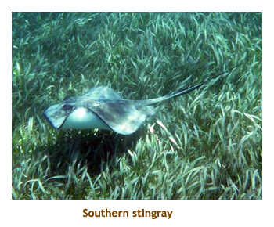

[ Home ] [ Travel ] [ Photography ] [ Pets ] [ Games] [ Rowing] [ Physics ]


Cruising on the Liberty of the Seas
Travel
Cruises
Past Cruises (Diaries)
Future Cruises
Rogues Galleries
Land Trips
Diaries (Land Trips)
Hawai'i - Big Island - 04'01
Hawai'i - Maui - 05'02
Hawai'i - Big Island - 04'03
Hawai'i - Kaua'i - 09'04
Hawai'i - Big Island - 04'06
Hawai'i - Maui - 04'06
Mainland China - 05'07
Phoenix, Arizona - 12'07
Greek Isles - 05'08
Hawai'i - Kaua'i - 09'08
Hawai'i - Big Island - 09'09
Hawai'i - Maui - 05'12
Hawai'i - Big Island - 04'13
Ireland - 08'13
Mexico - Cancun 11'13
France/Belgium/Lux 07'15
Hawai'i - Big Island - 05'17
England / Wales - 06'17
Hawai'i - Big Island - 09'19
Photography
Cameras
Underwater
Pets
Tara
Blackie
Whitey
Muffy
Ollie
Rusty
Fluffy
Rufus&Dufus
Games
Rowing
Physics
Rating (out of 5):
Ship  Food
Service
Food
Service  Itinerary
Itinerary
This cruise was different than any we had been on before. The kids had come up with the idea of doing a family cruise, so Marjorie and I decided that we would forego any ports and instead do what we could with the grandchildren so that the others could enjoy themselves without having to worry about the little ones. We were 9 in all: Chrissy, Matt and Lincoln; Mike, Stacy and Megan; Lynne (Stacy's mom); and, of course, Marjorie and me. We headed down to Houston a couple of days early so that C&M could take in a ball game.
The ship was really awesome, especially for kids. We were fortunate to be aboard shortly after a major reno, so some things were different since we were last aboard (2013). However, I gave the ship only 4 stars because the baby water area (Splashaway Bay) was often closed, and the big water slide was closed for the duration of the cruise. The food and the service were excellent. No complaints there. The itinerary was the "same old" to us, but worked fine as we planned to stay aboard with the grandchildren.
The ship was full, with 4,001 passengers (double occupancy is 3,798).
After just doing five small ships in a row this did seem a huge ship and
we really noticed the crowds. The Windjammer (buffet) was often a real zoo
but we mostly dined in the main dining room (MDR). As for weather,
it was generally sunny, warm and humid.
Pre-cruise (May 6) - Travelling to Houston
We were up early and drove up to C&M's by 8:00 AM, where we left
our car for the week. We loaded into Matt's
truck and drove to the airport. After parking the truck we shuttled to the terminal
building where we met M&S and Lynne. We slowly filed through customs and
then security, with not a lot of time left to wait for our 10:30 direct flight to Houston.
The grandchildren did just fine on the flight and we landed in Houston about
3:15. We retreived our baggage and did the hotel shuttle bus to the Staybridge
Suites. The 7 of us filled the van to capacity (C&M didn't come with us).
C&M rented a van at the airport and headed off to see a Houston Astro's
ball game while the rest of us (and Lincoln) ordered in Chinese food to the hotel.
We put Lincoln to bed in C&M's room and used the remote video monitor to watch
him from our own room. M&S returned from the game about 11:00 and we
all went to bed.
Pre-cruise (May 7) - A day in Houston
We were up early and had breakfast at the hotel. Today was our shopping
day to stock up on things for the cruise (the old Wal-Mart run!). The rental
van was only a 7 seater, so we couldn't all fit in at once. Matt was the
designated driver, so we decided that Marjorie and I would go with C&M in the
morning for the first run, then M&S and Lynne would go with C&M in the
afternoon. We got some Coke and cookies, and a sun hat for Marjorie.
For lunch we warmed up some left over Chinese food, then spent the
afternoon in the pool with Lincoln. For dinner the kids suggested a
nearby BBQ restaurant. We had to travel in two shifts to all get there.
The food was excellent, the specialty being a southern fried chicken.
I cheated and had St. Louis style ribs. Yum!! Coming home Stacy and
Lynne squashed into the luggage area of the van, so we all managed
to fit in at once. C&M dropped us all off back at the hotel, and then
went to return the rental van. At the front desk we booked for our
shuttle trip to the airport tomorrow. There were too many of us to
fit in the hotel van so they ordered a larger van from a neighbouring
hotel. We wandered around in the warm evening and then went to bed.
Day 1 (May 8) - Boarding in Galveston
We were up relatively early and had breakfast in the hotel.
Then we packed our bags and checked out. At the assigned time
the hotel van showed up, but it was smaller than the Staybridge van.
It turned out that their larger van was incapcitated from a recent flood.
Why wasn't that determined last night? So, it ended up taking two trips to
get us all to the airport. By this time it was about 11:00. We searched out
the RCI person to arrange getting on a bus to Galveston. Having babies
with us allowed us to "jump the queue" and we got the next bus. It
was about a 1.5 hour drive to the cruise dock. We arrived at 1:00 and
were checked in and onto the ship by 1:30. We ditched our carry-on
stuff in our cabin and then had lunch in the buffet. Back at our room
our bags had arrived. We unpacked our stuff and then headed to the
3:30 muster drill. Sail away was at 4:00. We wandered and checked
out the ship, looking for changes from the most recent dry dock.
We had dinner in the MDR and the little ones did admirably well. We
were sat at a tucked away table for 8 which we managed to book
for the rest of the cruise. I had seafood spaghetti (shrimps and scallops).
We wandered around for a while and then went to bed.
Day 2, 3 (May 9, 10) - Two Days At Sea
Both of our sea days were similar. We were up around 8:00 and breakfasted in the MDR with the kids. We took Lincoln to the kids pool and squeezed in a visit to the gym.We did lunch in the MDR where RCI makes those great "tutti" salads. In the afternoon we read and wandered the ship. We had dinners in the MDR at our table for 8 tucked away in a corner of the dining room. The first night was formal night so we got our photos taken with the Dreamworks characters. Nice to see everyone dressed up.
Note: Being "diamond" level with RCI, Marjorie and I received three free drinks each afternoon between 4:30 and 8:00, available from any bar but not the from MDR. They would only let you order one drink at a time per person, so we had to do three runs up to the bar to get everyone a drink for dinner. This became an every night ritual. I know it's cheating, but we deserved it!
For the dinners, I had fillet one night and a flank steak / braised short ribs
combo on the other. Lincoln slept over with us one night so that C&M could do
the casino. The other night we saw a Cirque du Soleil type show called "In the Air".
The "cruise planner" handout had indicated Saturday Night Fever
was to be the production, but for some
reason they had switched around the shows. That was fine by me.
 |
Day 4 (May 11) - Roatan, Honduras
We were up early for our first port - Roatan. We had all booked to spend
the day at Tabyana Beach, but M&S felt it would be too much for Megan, so
just the 5 of us went. We disembarked and met the tour group on the dock
about 9:00. We boarded a mini-bus and drove west for about 1/2 hour to
the beach. The beach operator provided a dining area, washrooms, change
rooms, beach chairs, etc. We grabbed some shaded chairs and settled in for the
day. C&M did a swim with Lincoln, so I headed off for a snorkel. The snorkeling
was great right off the beach! Afterwards Marjorie and I looked after Lincoln while
C&M did a snorkel. Just as C&M returned I headed out for a second snorkel.
Lunch was provided by the tour and was BBQ chicken, rice and fruit. It
was pretty good. The buses back to the ship started running at 1:30,
about every 15 minutes. We
were pretty well done for the day (it was hot!), so we caught the 1:45 bus back.
We were back just after 2:00 so we wandered the ship with Lincoln.
At 5:00 there was a Dreamworks parade in the central promenade. The
kids loved it - lots of noise and bright colours!
For dinner I had pork oscar. The oscar was better than the pork! Didn't
do the entertainment tonight.
Day 5 (May 12) - Belize City, Belize
Today Mike, Chrissy and Matt were off on an all day snorkel to see sharks and rays. Stacy was staying back with Megan (and Lynne) while Marjorie and I babysat Lincoln. It was a warm day at 32 degrees and very humid. Because this was a tendering port, we decided that we would not bother going ashore via the 1/2 hour tender ride. We had breakfast in the main dining room and then spent the morning playing in the baby's pool area and wandering the ship. We had lunch in the buffet. Afterwards Lincoln had a long nap so Marjorie and I did some reading. When Lincoln was awake again we tried out the "free play" area of the Kid's Club complex. Lincoln soon tired of the few toys there so we continued to the back of the ship to watch the surfers for a bit. It was another (and last!) formal night. At dinner we heard all about the kid's snorkel adventure with the sharks and rays. They weren't disappointed and saw lots of nurse sharks, sting rays and eagle rays. Michael did a wonderful movie of the sharks which you can see here. For dinner I had prime rib. No entertainment tonight.
The
underwater photos below are compliments of Mike and Chrissy. Thanks, guys.
|  | |||
Day 6 (May 13) - Cozumel, Mexico
Our final port stop was in Cozumel. None of us had planned on doing
much here other than a bit of shopping at the cruise port mall. (Besides,
we had been here 4 or 5 times before on previous cruises). We were up
early and had breakfast in the MDR. We headed off the ship to find a wi-fi
area and to get some vanilla. I found it too hot there so we headed back
onto the ship to take Lincoln to the kid's pool. We had lunch in the buffet
and then took Lincoln to our cabin for a nap. C&M were in town (San Miguel)
for lunch and so we had Lincoln for a while. C&M picked up Lincoln
mid-afternoon and we went back in to the plaza to use the internet some more.
For dinner I had shrimps. We took Lincoln to overnight in our cabin so that C&M
could do the casino. Lincoln was very good at going to sleep and didn't wake
us at all through the night. A very enjoyable day.
Day 7 (May 14) - A day at sea
We were up at 7:30 for our final sea day of the cruise. It was another nice warm day.
We took Lincoln to the kid's pool at 8:00, but it was delayed in opening. We met the
others for breakfast in the MDR. Afterwards Marjorie took Lincoln to the pool while I
read for a bit. We had lunch in the MDR (tutti salad). At 1:00 we saw the ice show in
Studio B with Lynne, M&S and Megan. It was very good and Megan loved it - lots of
loud music and colourful costumes. C&M missed the 1:00 show as Lincoln was
napping so they did the 3:00 show. Apparently Lincoln liked it as much as Megan.
C&M and Marjorie and I headed up to the sports deck to play some mini-golf. They
had a very nice setup, probably the best we've seen at sea. For dinner I had
a combo of deep fried shrimp, scallops and white fish. It was kind of overcooked
and dry but it was OK. Then we went back to our cabin to do our final packing and
put our suitcases out into the hallway. Then off to bed.
Day 8 (May 15) - Houston and Home

We were up early and met the others at the MDR for our final breakfast. Our debark time was 8:30 AM and our flight wasn't until 5:00 PM, so we were expecting a 7 hour stay at the airport. Marj had dabbled with getting a day pass at an airport hotel, but it turned out that we couldn't have used it anyway. We grabbed our carry-on bags and headed to Studio B - our departure lounge. Our baggage tickets we group numbers 2 and 3 (out of 30 or so groups) and we were the earliest groups scheduled to leave the ship. When our numbers were called at 8:30 or so, mobs of people swarmed out and the luggage area of the terminal building was a complete zoo! They should have monitored people's group numbers and not let so many off at once. It took us 1.5 hours to claim our bags and go through customs. We made it on to a bus by about 11:00. The bus had problems with a wheel chair loading mechanism, so we were delayed even more. We left at 11:30 and arrived at the Houston airport at 1:00. We had to wait until 2:00 for the WestJet personnel to show up. Then we checked in, cleared security and went for lunch. It was about 3:30 when we reached the gate area and loading started soon after 4:00. Good job we hadn't paid for a hotel day pass! Our flight was on time and we arrived in Calgary about 8:30. The grandkids did really well on the plane. We did customs, grabbed our luggage, said goodbye to Lynne, M&S and Megan, shuttled to the parking lot and drove to C&M's. We drove home and were there by about 10:30. The kitties were happy to see us. Another great cruise!